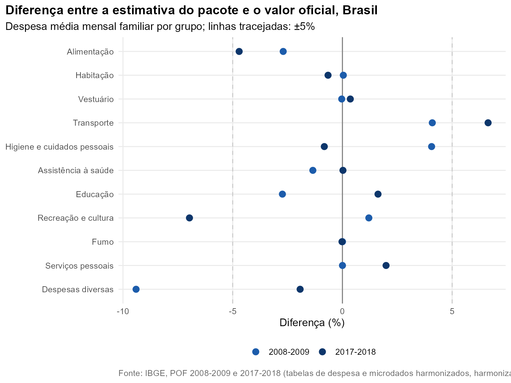

Pergunta. Os números que o pacote produz batem com os publicados pelo IBGE?
Método. pof_validar() reproduz, com os
microdados harmonizados, a despesa média mensal
familiar de cada tipo de despesa das tabelas oficiais da POF
2008-2009 e 2017-2018, lidas das planilhas do FTP do IBGE
(pof_ibge()). São 1295 valores oficiais em 21 recortes:
Brasil, urbano e rural, as cinco Grandes Regiões e, em 2008-2009, sexo e
cor ou raça da pessoa de referência. 1090 têm correspondência direta com
a harmonização (pof_mapa_ibge()). Para cada um, o pacote
calcula a estimativa e o IC de 95% do desenho amostral.
O que bate exatamente
- Número de famílias: 69.017.704 em 2017-2018 (IBGE: 69.017.704) e 57.816.604 em 2008-2009 (IBGE: 57.816.604). Isso confirma que unidades de consumo e pesos amostrais estão sendo lidos como o IBGE os usa.
- Tamanho médio da família, nas duas edições.
- Despesa de consumo: 3.704,63 reais em 2017-2018, contra 3.764,51 do IBGE (-1,6%).
- Itens com mapeamento direto, como energia elétrica, gás, água, aluguel, plano de saúde, fumo e jogos e apostas, reproduzem o valor oficial ao centavo ou quase.
Grandes grupos de consumo

| Edicao | Grupo | IBGE (reais) | Pacote (reais) | IC 95% | Diferença (%) |
|---|---|---|---|---|---|
| 2008-2009 | Habitação | 765,89 | 720,01 | 699,88 a 740,14 | -6,0 |
| 2008-2009 | Alimentação | 421,72 | 410,34 | 401,92 a 418,76 | -2,7 |
| 2008-2009 | Transporte | 419,19 | 436,36 | 418,97 a 453,75 | 4,1 |
| 2008-2009 | Assistência à saúde | 153,81 | 151,74 | 144,84 a 158,63 | -1,3 |
| 2008-2009 | Vestuário | 118,22 | 118,18 | 114,72 a 121,65 | -0,0 |
| 2008-2009 | Educação | 64,81 | 63,04 | 58,32 a 67,76 | -2,7 |
| 2008-2009 | Despesas diversas | 61,87 | 98,80 | 67,78 a 129,82 | 59,7 |
| 2008-2009 | Higiene e cuidados pessoais | 51,02 | 53,09 | 51,58 a 54,61 | 4,1 |
| 2008-2009 | Recreação e cultura | 42,76 | 69,46 | 66,44 a 72,48 | 62,4 |
| 2008-2009 | Serviços pessoais | 23,85 | 23,85 | 22,93 a 24,78 | 0,0 |
| 2008-2009 | Fumo | 11,62 | 11,62 | 11,00 a 12,24 | 0,0 |
| 2017-2018 | Habitação | 1.377,14 | 1.317,12 | 1.280,17 a 1.354,06 | -4,4 |
| 2017-2018 | Transporte | 679,76 | 718,82 | 689,46 a 748,19 | 5,7 |
| 2017-2018 | Alimentação | 658,23 | 633,07 | 620,45 a 645,68 | -3,8 |
| 2017-2018 | Assistência à saúde | 302,06 | 302,13 | 290,03 a 314,24 | 0,0 |
| 2017-2018 | Educação | 175,60 | 178,45 | 166,67 a 190,22 | 1,6 |
| 2017-2018 | Vestuário | 160,25 | 160,83 | 156,58 a 165,07 | 0,4 |
| 2017-2018 | Higiene e cuidados pessoais | 136,82 | 129,88 | 127,51 a 132,25 | -5,1 |
| 2017-2018 | Despesas diversas | 112,53 | 107,98 | 100,35 a 115,60 | -4,0 |
| 2017-2018 | Recreação e cultura | 96,16 | 89,46 | 86,12 a 92,80 | -7,0 |
| 2017-2018 | Serviços pessoais | 48,55 | 49,52 | 47,76 a 51,27 | 2,0 |
| 2017-2018 | Fumo | 17,40 | 17,40 | 16,41 a 18,38 | -0,0 |
Em 2017-2018 o maior desvio entre os grupos é o de recreação e cultura (-7,0%); saúde, educação, vestuário, fumo e serviços pessoais ficam a menos de 2%. Em 2008-2009 dois grupos destoam, recreação e cultura (62%) e despesas diversas (60%), enquanto habitação fica 6,0% abaixo. Os itens mostram onde: em 2008-2009, “Imóveis de uso ocasional” aparece com R$ 47,82 (IBGE: R$ 5,94) e “Recreação: outras” com R$ 35,72 (IBGE: R$ 9,54), enquanto o telefone celular fica abaixo (R$ 14,04 contra R$ 26,19).
Por recorte
| Edicao | Recorte | Grupos | Mediana |dif| (%) | Até 5% (%) | Oficial dentro do IC (%) |
|---|---|---|---|---|---|
| 2008-2009 | Brasil | 11 | 2,7 | 73 | 55 |
| 2008-2009 | Urbana | 11 | 2,9 | 73 | 55 |
| 2008-2009 | Rural | 11 | 2,2 | 82 | 82 |
| 2008-2009 | Homem | 11 | 2,8 | 73 | 55 |
| 2008-2009 | Mulher | 11 | 2,9 | 73 | 82 |
| 2008-2009 | Branca | 11 | 3,2 | 73 | 55 |
| 2008-2009 | Preta | 11 | 2,7 | 82 | 91 |
| 2008-2009 | Parda | 11 | 2,9 | 82 | 73 |
| 2008-2009 | Norte | 11 | 2,1 | 82 | 82 |
| 2008-2009 | Nordeste | 11 | 1,9 | 73 | 82 |
| 2008-2009 | Sudeste | 11 | 2,8 | 64 | 73 |
| 2008-2009 | Sul | 11 | 3,3 | 82 | 73 |
| 2008-2009 | Centro-Oeste | 11 | 3,4 | 55 | 82 |
| 2017-2018 | Brasil | 11 | 3,8 | 73 | 55 |
| 2017-2018 | Urbana | 11 | 3,6 | 73 | 55 |
| 2017-2018 | Rural | 11 | 2,7 | 73 | 82 |
| 2017-2018 | Norte | 11 | 2,5 | 91 | 100 |
| 2017-2018 | Nordeste | 11 | 3,0 | 82 | 64 |
| 2017-2018 | Sudeste | 11 | 2,5 | 64 | 64 |
| 2017-2018 | Sul | 11 | 3,5 | 64 | 64 |
| 2017-2018 | Centro-Oeste | 11 | 2,7 | 73 | 91 |
Itens: onde a harmonização diverge da classificação do IBGE
A comparação item a item é o teste mais exigente: um produto pode estar no grupo certo e na folha errada. Os itens com maior diferença absoluta (valor oficial de pelo menos R$ 5):
| Edicao | Grupo | Item | IBGE (reais) | Pacote (reais) | Diferença (reais) |
|---|---|---|---|---|---|
| 2008-2009 | Despesas diversas | Imóveis de uso ocasional | 5,94 | 47,82 | 41,88 |
| 2017-2018 | Transporte | Viagens esporádicas | 69,24 | 109,51 | 40,27 |
| 2017-2018 | Despesas diversas | Serviços profissionais | 34,79 | 0,00 | -34,79 |
| 2017-2018 | Despesas diversas | Outras | 24,11 | 58,52 | 34,41 |
| 2008-2009 | Habitação | Serviços e taxas | 183,90 | 157,66 | -26,24 |
| 2008-2009 | Recreação e cultura | Outras | 9,54 | 35,72 | 26,18 |
| 2017-2018 | Habitação | Telefone fixo | 7,72 | 33,79 | 26,07 |
| 2017-2018 | Educação | Outras | 13,03 | 34,01 | 20,98 |
| 2017-2018 | Educação | Outros cursos e atividades | 39,07 | 19,39 | -19,68 |
| 2017-2018 | Habitação | Telefone Celular | 49,42 | 67,34 | 17,92 |
| 2008-2009 | Transporte | Viagens esporádicas | 32,43 | 50,16 | 17,73 |
| 2017-2018 | Assistência à saúde | Consulta médica | 15,76 | 32,13 | 16,37 |
| 2017-2018 | Recreação e cultura | Recreações e esportes | 21,55 | 7,26 | -14,29 |
| 2017-2018 | Assistência à saúde | Consulta e tratamento dentário | 14,59 | 1,77 | -12,82 |
| 2017-2018 | Assistência à saúde | Material de tratamento | 13,18 | 0,41 | -12,77 |
| 2017-2018 | Educação | Livros didáticos e revistas técnicas | 12,56 | 0,00 | -12,56 |
O padrão é de itens trocados dentro do mesmo grupo.
Em 2017-2018, dentista aparece como consulta médica, material de
tratamento como “outras” da saúde, serviços profissionais como “outras”
despesas diversas, e cirurgia e livros didáticos ficam vazios (a própria
nota de qualidade da v2 marca essas duas folhas como ausentes em 2017).
Os totais de saúde e educação, porém, batem. Para análises por grupo, a
harmonização é confiável; para análises de itens desses grupos em
2017-2018, confira a folha em pof_ibge() antes de
interpretar.
Duas linhas têm explicação conhecida e não são erro de harmonização:
- Telefonia em 2017-2018. O IBGE separa “pacote de telefone, TV e internet”; a harmonização o distribui entre telefone fixo e celular. Somados os três, o pacote estima R$ 101,13, contra R$ 107,55 do IBGE.
- Outras despesas correntes (impostos, contribuições trabalhistas) ficam cerca de metade do oficial nas duas edições: os descontos sobre rendimentos estão no arquivo de rendimentos, não no de despesas. Não entram na despesa de consumo.
Reproduzir
h <- pof_harmonizacao()
b <- pof_somar_grupos(pof_ler_edicao(2017, dir, h, manter_sem_consumo = TRUE))
v <- pof_validar(b)
v[Recorte == "Nordeste" & is.na(Item_ibge)]
pof_ibge("2017-2018", "Brasil") # a tabela oficial